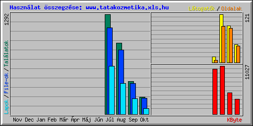

| Havi összefoglalás | ||||||||||
|---|---|---|---|---|---|---|---|---|---|---|
| Hónap | Napi átlag | Havi összegzés | ||||||||
| Találatok | File-ok | Lapok | Látogatók | Oldalak | KByte | Látogatók | Lapok | File-ok | Találatok | |
| Okt 2015 | 14 | 13 | 5 | 3 | 41 | 3432 | 45 | 75 | 209 | 219 |
| Sep 2015 | 14 | 13 | 6 | 3 | 86 | 4864 | 92 | 201 | 395 | 425 |
| Aug 2015 | 30 | 27 | 13 | 4 | 91 | 11027 | 121 | 399 | 828 | 921 |
| Júl 2015 | 646 | 559 | 309 | 7 | 6 | 10339 | 14 | 618 | 1119 | 1292 |
| Összegzés | 29662 | 272 | 1293 | 2551 | 2857 | |||||
| Generated by Webalizer Version 2.20 |